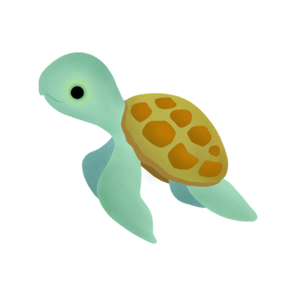
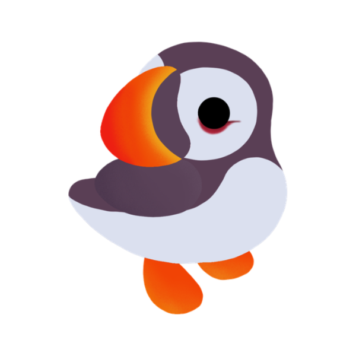
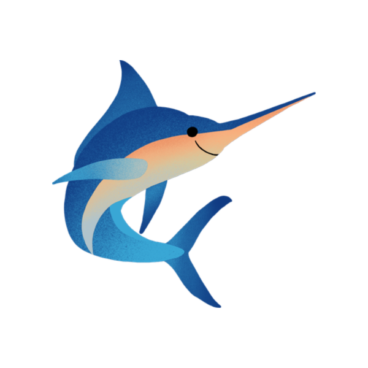
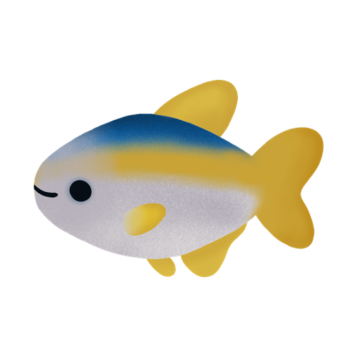
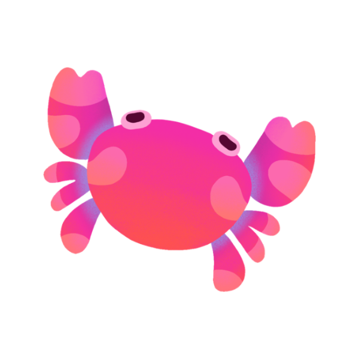

Play Online Free
Two to eight players, in a browser, on a laptop or a phone. Play as a guest or make a free account and keep your stats.
From waves to wings.
The campaign date is not public yet. Join the email list and it reaches you the hour it is decided, with the link to back it on day one.
The Kickstarter opens soon. That is your own clock, not ours, so there is no arithmetic to do.
The four Supporter Tiers are open, and 5% goes to ocean conservation. Thank you for being here on day one.
Four Supporter Tiers open on Kickstarter, from $15 to $100. Every one of them carries a Founder Supporter number, your name on the Supporter Reef Wall and a profile frame in the online game, and 5% goes to ocean conservation.





Wave Warrior, Ocean Ally, Tide Turner and Tsunami all go live at once, $15 through $100.
Tide Turner comes with a free physical copy of the game. Tsunami comes with two.
Every tier carries a Founder Supporter number and your name on the Supporter Reef Wall, kept permanently.
5% goes to ocean conservation. How we work it out is on our Business and Legal page.
Four ways to back the launch. Pick the one that fits. Each comes with permanent supporter recognition and a profile frame in the online game.
Support Currents and Critters at the easiest entry level and help launch the first wave.
Join the first wave of supporters and help bring Currents and Critters to life.
Help build the reef and get a physical copy of Currents and Critters.
The biggest tier you can buy outright. Two physical copies, everything in the game, and your name in the credits.
Every perk of all four tiers, in full: see the complete list on the homepage →
Giving more than $100? Tell us what you have in mind.
You do not have to wait for launch day to play. The online game is free, in beta, and running right now.
Two to eight players, in a browser, on a laptop or a phone. Play as a guest or make a free account and keep your stats.
Playing with the printed cards? Photograph the table and the scores come back read off the board.
The whole rulebook, word for word, with the Quick Start up front. Sixty seconds gets you playing.